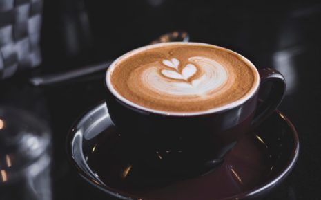

MORE ESPRESSO, LESS DEPRESSO
Home
About
Menu
Coffee First, Schemes Later!
Coffee contains caffeine, a stimulant that has been shown to increase energy levels and decrease fatigue by
altering levels of certain neurotransmitters in the brain.Regular coffee consumption may be linked to a lower
risk of developing type 2 diabetes over the long term.Some research suggests that drinking coffee could help
protect against Alzheimer’s disease, Parkinson’s disease, and cognitive decline.Coffee could help support weight
management and may be linked to decreased body fat. One study also found that people who consumed coffee were
more likely to be physically active. Several studies have found that coffee could be linked to a lower risk of
depression and may even be linked to a lower risk of death by suicide.Coffee consumption could be linked to a
decreased risk of death from chronic liver disease, along with other conditions, like liver scarring and liver
cancer.Some research shows that drinking coffee could be linked to a lower risk of heart disease, stroke, and
heart failure.Coffee could be associated with a lower risk of death, regardless of other factors, like age,
weight status, or alcohol consumption. Still, more research is needed.Coffee could improve physical performance
and endurance when consumed before exercising. However, some studies have turned up mixed results.

Types Of Coffees

Cuppiccino:

Espresso:
Flat White:
Long Black:
Doppio:
A cappuccino is an espresso-based coffee drink that originated in Austria with later development taking place in
Italy, and is prepared with steamed milk foam. Variations of the drink involve the use of cream instead of milk,
using non-dairy milk substitutes and flavoring with cinnamon or chocolate powder.
Espresso is a coffee-brewing method of Italian origin, in which a small amount of nearly boiling water is forced
under 9–10 bars of pressure through finely-ground coffee beans. Espresso coffee can be made with a wide variety of
coffee beans and roast degrees.
A flat white is a coffee drink consisting of espresso with microfoam. It is comparable to a latte, but smaller in
volume and with less microfoam, therefore having a higher proportion of coffee to milk.
A long black is a style of coffee commonly found in Australia and New Zealand. It is similar to an Americano, but
with a stronger aroma and taste. A long black is made by pouring a double-shot of espresso or ristretto over hot
water.
Doppio espresso (Italian pronunciation: [ˈdoppjo]) is a double shot which is extracted using double the amount of
ground coffee in a larger-sized portafilter basket. This results in 60 ml (2.1 imp fl oz; 2.0 US fl oz) of drink,
double the amount of a single shot espresso. Doppio is Italian multiplier, meaning "double".
G@llery

ABOUT US
Our heritage
Our Company
Customer Service
Frequently Asked Questions
Quick Lines
Store Locator